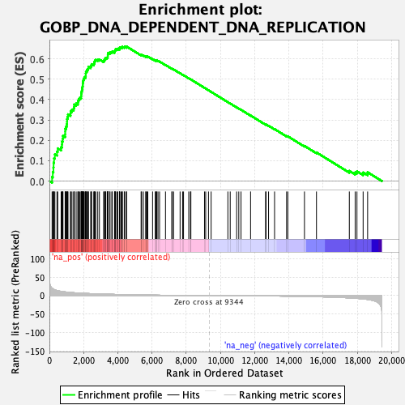
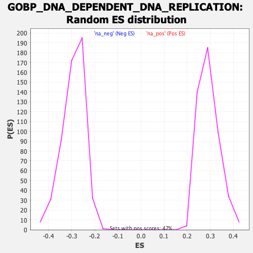

| | | Dataset | DE_genes |
| Phenotype | NoPhenotypeAvailable |
| Upregulated in class | na_pos |
| GeneSet | GOBP_DNA_DEPENDENT_DNA_REPLICATION |
| Enrichment Score (ES) | 0.66059226 |
| Normalized Enrichment Score (NES) | 2.264048 |
| Nominal p-value | 0.0 |
| FDR q-value | 0.0 |
| FWER p-Value | 0.0 |
Table: GSEA Results Summary

Fig 1: Enrichment plot: GOBP_DNA_DEPENDENT_DNA_REPLICATION
Profile of the Running ES Score & Positions of GeneSet Members on the Rank Ordered List
| SYMBOL | RANK IN GENE LIST | RANK METRIC SCORE | RUNNING ES | CORE ENRICHMENT | | 1 | POLE3 | 157 | 20.003 | 0.0200 | Yes |
| 2 | ORC3 | 198 | 18.598 | 0.0441 | Yes |
| 3 | ENDOG | 234 | 17.264 | 0.0666 | Yes |
| 4 | TRAIP | 243 | 17.086 | 0.0903 | Yes |
| 5 | STOML2 | 272 | 16.540 | 0.1121 | Yes |
| 6 | SETMAR | 319 | 15.563 | 0.1316 | Yes |
| 7 | CIZ1 | 443 | 13.658 | 0.1445 | Yes |
| 8 | ORC2 | 487 | 13.062 | 0.1606 | Yes |
| 9 | TONSL | 685 | 11.397 | 0.1665 | Yes |
| 10 | POLD1 | 733 | 11.005 | 0.1795 | Yes |
| 11 | CDK9 | 740 | 10.985 | 0.1947 | Yes |
| 12 | POLD3 | 777 | 10.766 | 0.2079 | Yes |
| 13 | CENPX | 793 | 10.663 | 0.2222 | Yes |
| 14 | GMNN | 920 | 9.857 | 0.2295 | Yes |
| 15 | MMS22L | 923 | 9.848 | 0.2433 | Yes |
| 16 | PRIM2 | 925 | 9.841 | 0.2571 | Yes |
| 17 | ALYREF | 976 | 9.641 | 0.2681 | Yes |
| 18 | ORC5 | 1015 | 9.422 | 0.2794 | Yes |
| 19 | MCM3 | 1030 | 9.354 | 0.2918 | Yes |
| 20 | TEFM | 1034 | 9.338 | 0.3048 | Yes |
| 21 | WDR18 | 1060 | 9.158 | 0.3164 | Yes |
| 22 | ZRANB3 | 1087 | 9.008 | 0.3277 | Yes |
| 23 | RFC5 | 1235 | 8.346 | 0.3319 | Yes |
| 24 | ORC4 | 1241 | 8.336 | 0.3433 | Yes |
| 25 | INO80 | 1318 | 8.048 | 0.3507 | Yes |
| 26 | DACH1 | 1417 | 7.723 | 0.3565 | Yes |
| 27 | FBXO5 | 1447 | 7.618 | 0.3657 | Yes |
| 28 | RPA1 | 1454 | 7.608 | 0.3761 | Yes |
| 29 | ZGRF1 | 1564 | 7.229 | 0.3807 | Yes |
| 30 | LRWD1 | 1664 | 6.927 | 0.3853 | Yes |
| 31 | SSBP1 | 1674 | 6.906 | 0.3945 | Yes |
| 32 | RFC3 | 1714 | 6.817 | 0.4021 | Yes |
| 33 | KAT7 | 1770 | 6.647 | 0.4086 | Yes |
| 34 | TOPBP1 | 1853 | 6.434 | 0.4134 | Yes |
| 35 | RFC2 | 1859 | 6.418 | 0.4222 | Yes |
| 36 | SMARCAL1 | 1864 | 6.409 | 0.4310 | Yes |
| 37 | FANCM | 1879 | 6.366 | 0.4392 | Yes |
| 38 | POLD2 | 1901 | 6.306 | 0.4470 | Yes |
| 39 | MCM6 | 1913 | 6.285 | 0.4553 | Yes |
| 40 | RECQL4 | 1932 | 6.241 | 0.4632 | Yes |
| 41 | CDC34 | 1948 | 6.202 | 0.4711 | Yes |
| 42 | POLE | 1951 | 6.201 | 0.4797 | Yes |
| 43 | ZMPSTE24 | 1961 | 6.183 | 0.4880 | Yes |
| 44 | REV3L | 1982 | 6.130 | 0.4956 | Yes |
| 45 | MCM9 | 2008 | 6.074 | 0.5028 | Yes |
| 46 | TWNK | 2042 | 5.994 | 0.5096 | Yes |
| 47 | CHTF18 | 2113 | 5.850 | 0.5142 | Yes |
| 48 | THOC1 | 2124 | 5.825 | 0.5218 | Yes |
| 49 | RFWD3 | 2125 | 5.823 | 0.5300 | Yes |
| 50 | DBF4B | 2136 | 5.805 | 0.5377 | Yes |
| 51 | SRPK2 | 2191 | 5.659 | 0.5429 | Yes |
| 52 | ATAD5 | 2221 | 5.596 | 0.5492 | Yes |
| 53 | DBF4 | 2272 | 5.495 | 0.5544 | Yes |
| 54 | GINS4 | 2280 | 5.478 | 0.5617 | Yes |
| 55 | TIMELESS | 2415 | 5.234 | 0.5621 | Yes |
| 56 | POLA1 | 2442 | 5.181 | 0.5681 | Yes |
| 57 | MCM7 | 2467 | 5.128 | 0.5741 | Yes |
| 58 | RAD51 | 2595 | 4.903 | 0.5744 | Yes |
| 59 | BRCA2 | 2617 | 4.859 | 0.5801 | Yes |
| 60 | MGME1 | 2631 | 4.833 | 0.5863 | Yes |
| 61 | GINS1 | 2659 | 4.769 | 0.5916 | Yes |
| 62 | DDX11 | 2711 | 4.678 | 0.5955 | Yes |
| 63 | DDX23 | 2827 | 4.493 | 0.5959 | Yes |
| 64 | WDHD1 | 2923 | 4.333 | 0.5971 | Yes |
| 65 | RFC4 | 3172 | 3.955 | 0.5898 | Yes |
| 66 | ZNF830 | 3216 | 3.891 | 0.5930 | Yes |
| 67 | TIPIN | 3219 | 3.883 | 0.5984 | Yes |
| 68 | MCM5 | 3278 | 3.797 | 0.6007 | Yes |
| 69 | ZPR1 | 3292 | 3.777 | 0.6054 | Yes |
| 70 | ORC1 | 3378 | 3.666 | 0.6061 | Yes |
| 71 | MCM4 | 3405 | 3.640 | 0.6099 | Yes |
| 72 | NUCKS1 | 3411 | 3.631 | 0.6148 | Yes |
| 73 | POLB | 3414 | 3.622 | 0.6198 | Yes |
| 74 | MCM2 | 3420 | 3.614 | 0.6246 | Yes |
| 75 | POLE2 | 3431 | 3.598 | 0.6291 | Yes |
| 76 | WRN | 3534 | 3.490 | 0.6288 | Yes |
| 77 | MCIDAS | 3540 | 3.481 | 0.6334 | Yes |
| 78 | GINS3 | 3648 | 3.351 | 0.6326 | Yes |
| 79 | LIG1 | 3672 | 3.320 | 0.6361 | Yes |
| 80 | DDX21 | 3806 | 3.167 | 0.6336 | Yes |
| 81 | CDT1 | 3817 | 3.152 | 0.6375 | Yes |
| 82 | WRNIP1 | 3836 | 3.124 | 0.6410 | Yes |
| 83 | SAMHD1 | 3863 | 3.090 | 0.6440 | Yes |
| 84 | POLQ | 3876 | 3.078 | 0.6477 | Yes |
| 85 | PRIM1 | 3965 | 2.972 | 0.6473 | Yes |
| 86 | NOC3L | 4001 | 2.928 | 0.6496 | Yes |
| 87 | DSCC1 | 4100 | 2.814 | 0.6485 | Yes |
| 88 | POLE4 | 4103 | 2.812 | 0.6524 | Yes |
| 89 | CDK2 | 4112 | 2.806 | 0.6559 | Yes |
| 90 | CENPS | 4193 | 2.708 | 0.6556 | Yes |
| 91 | RPA4 | 4251 | 2.652 | 0.6564 | Yes |
| 92 | DONSON | 4264 | 2.639 | 0.6595 | Yes |
| 93 | BLM | 4375 | 2.515 | 0.6573 | Yes |
| 94 | CDC6 | 4401 | 2.488 | 0.6595 | Yes |
| 95 | EME1 | 4503 | 2.378 | 0.6576 | Yes |
| 96 | E2F8 | 4511 | 2.376 | 0.6606 | Yes |
| 97 | MCM10 | 5361 | 1.645 | 0.6189 | No |
| 98 | TICRR | 5391 | 1.620 | 0.6197 | No |
| 99 | PNKP | 5492 | 1.534 | 0.6167 | No |
| 100 | MCMBP | 5636 | 1.450 | 0.6113 | No |
| 101 | WIZ | 5640 | 1.448 | 0.6132 | No |
| 102 | RFC1 | 5707 | 1.405 | 0.6117 | No |
| 103 | GEN1 | 5750 | 1.379 | 0.6115 | No |
| 104 | RPAIN | 6031 | 1.215 | 0.5987 | No |
| 105 | RECQL | 6191 | 1.123 | 0.5920 | No |
| 106 | TERF1 | 6215 | 1.109 | 0.5924 | No |
| 107 | UPF1 | 6251 | 1.084 | 0.5921 | No |
| 108 | CDK2AP1 | 6279 | 1.065 | 0.5922 | No |
| 109 | RTEL1 | 6348 | 1.018 | 0.5901 | No |
| 110 | SIRT7 | 6440 | 0.968 | 0.5868 | No |
| 111 | RECQL5 | 6787 | 0.789 | 0.5700 | No |
| 112 | NUGGC | 7155 | 0.622 | 0.5518 | No |
| 113 | ATR | 7181 | 0.607 | 0.5514 | No |
| 114 | DNAJA3 | 7261 | 0.579 | 0.5481 | No |
| 115 | SLFN11 | 7640 | 0.435 | 0.5291 | No |
| 116 | NBN | 7786 | 0.383 | 0.5221 | No |
| 117 | POLN | 7841 | 0.364 | 0.5199 | No |
| 118 | HELB | 8146 | 0.276 | 0.5045 | No |
| 119 | FAM111A | 8246 | 0.246 | 0.4997 | No |
| 120 | RTF2 | 8270 | 0.240 | 0.4988 | No |
| 121 | METTL4 | 9067 | 0.051 | 0.4577 | No |
| 122 | BAZ1A | 9137 | 0.038 | 0.4541 | No |
| 123 | TERF2 | 9300 | 0.009 | 0.4458 | No |
| 124 | EXD2 | 9455 | -0.018 | 0.4378 | No |
| 125 | RRM2B | 10434 | -0.235 | 0.3875 | No |
| 126 | MRE11 | 10571 | -0.265 | 0.3808 | No |
| 127 | LIG3 | 10946 | -0.368 | 0.3619 | No |
| 128 | PRIMPOL | 11072 | -0.406 | 0.3560 | No |
| 129 | POLG2 | 11201 | -0.444 | 0.3500 | No |
| 130 | SENP2 | 11761 | -0.618 | 0.3219 | No |
| 131 | MUS81 | 12638 | -0.955 | 0.2778 | No |
| 132 | HMGA1 | 12666 | -0.962 | 0.2778 | No |
| 133 | EME2 | 12812 | -1.022 | 0.2717 | No |
| 134 | POLG | 13163 | -1.172 | 0.2552 | No |
| 135 | BOD1L1 | 13866 | -1.579 | 0.2211 | No |
| 136 | OOEP | 13938 | -1.631 | 0.2197 | No |
| 137 | PURA | 14911 | -2.369 | 0.1727 | No |
| 138 | ATRX | 15613 | -3.080 | 0.1407 | No |
| 139 | CHTF8 | 17534 | -6.260 | 0.0500 | No |
| 140 | FBH1 | 17875 | -7.208 | 0.0425 | No |
| 141 | BCL6 | 17980 | -7.602 | 0.0478 | No |
| 142 | ETAA1 | 18341 | -9.145 | 0.0420 | No |
| 143 | POLD4 | 18603 | -10.494 | 0.0433 | No |
Table: GSEA details [plain text format]

Fig 2: GOBP_DNA_DEPENDENT_DNA_REPLICATION: Random ES distribution
Gene set null distribution of ES for GOBP_DNA_DEPENDENT_DNA_REPLICATION